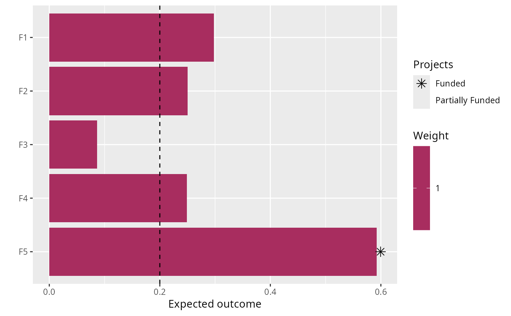
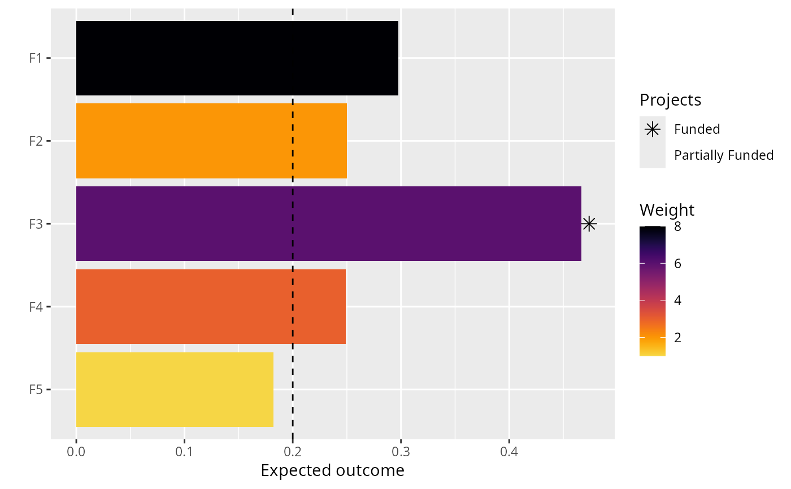

Add maximum targets met objective
Source:R/add_max_targets_met_objective.R
add_max_targets_met_objective.RdAdd an objective to a project prioritization problem based on
maximizing the number of targets met, whilst ensuring that the cost of the
solution is within a pre-specified budget
(Chades et al. 2015). In some project prioritization exercises,
decision makers may have a target threshold level of expected outcome
for each feature (e.g., a 90% chance of persistence for each feature).
In such exercises, the decision makers
do not perceive any benefit when a target is not met (e.g., if a feature
has a target corresponding to a 90% chance of persistence, then no benefit
is accrued if the feature has a 50% chance of persistence), and do not
assign any greater benefit for surpassing a target (e.g., if a feature has a
target corresponding to a 90% chance of persistence, then the same level
of benefit would be accrued if the feature had a 90% or 95% chance
of persistence). Furthermore, weights can also be used to specify the
relative importance of meeting targets for particular features
(see add_feature_weights()).
Arguments
- x
problem()object.- budget
numericvalue representing the maximum amount of total expenditure for funding actions.
Value
A problem() with the objective added to it.
Details
A problem objective is used to specify the overall goal of the project prioritization problem. Here, the maximum targets met objective seeks to find the set of actions that maximizes the total number of features (e.g., populations, species, ecosystems) that have met their targets within a pre-specified budget. Let \(I\) represent the set of conservation actions (indexed by \(i\)). Let \(C_i\) denote the cost for funding action \(i\), and let \(m\) denote the maximum expenditure (i.e., the budget). Also, let \(F\) represent each feature (indexed by \(f\)), \(W_f\) represent the weight for each feature \(f\) (defaults to one for each feature unless specified otherwise), \(T_f\) represent the target for each feature \(f\), and \(E_f\) denote the expected outcome for each feature given the funded conservation projects.
To guide the prioritization, the conservation actions are organized into
conservation projects. Let \(J\) denote the set of conservation projects
(indexed by \(j\)), and let \(A_{ij}\) denote which actions
\(i \in I\) comprise each conservation project
\(j \in J\) using zeros and ones. Next, let \(P_j\) represent
the probability of project \(j\) being successful if it is funded. Also,
let \(B_{fj}\) denote the outcome for each feature
\(f \in F\) associated with the project \(j \in J\)
assuming that all of the actions comprising project \(j\) are funded
and that project is allocated to feature \(f\). For convenience,
let \(Q_{fj}\) denote the expected outcome for each
\(f \in F\) associated with the project \(j \in J\)
if the project is funded. If the argument
to adjust_for_baseline in the problem function was set to
TRUE, and this is the default behavior, then
\(Q_{fj} = (P_{j} \times B_{fj}) + \bigg(\big(1 - (P_{j} B_{fj})\big)
\times (P_{n} \times B_{fn})\bigg)\), where n corresponds to the
baseline "do nothing" project. This means that the expected outcome
for a feature given that a project is funded and allocated to the feature
depends on (i) the probability of the project succeeding, (ii) the
outcome for the feature if the project succeeds,
and (iii) the outcome for the feature if the project fails
(per the baseline project).
Otherwise, if the argument is set to FALSE, then
\(Q_{fj} = P_{j} \times B_{fj}\).
The binary control variables \(X_i\) in this problem indicate whether each project \(i \in I\) is funded or not. The decision variables in this problem are the \(Y_{j}\), \(Z_{fj}\), \(E_f\), and \(G_f\) variables. Specifically, the binary \(Y_{j}\) variables indicate if project \(j\) is funded or not based on which actions are funded; the binary \(Z_{fj}\) variables indicate if project \(j\) is used to manage feature \(f\) or not; the continuous \(E_f\) variables denote the expected outcome for feature \(f\); and the binary \(G_f\) variables indicate if the target for feature \(f\) is met.
Now that we have defined all the data and variables, we can formulate the problem. For convenience, let the symbol used to denote each set also represent its cardinality (e.g., if there are ten features, let \(F\) represent the set of ten features and also the number ten).
$$ \mathrm{Maximize} \space \sum_{f = 0}^{F} G_f W_f \space \mathrm{(eqn \space 1a)} \\ \mathrm{Subject \space to} \sum_{i = 0}^{I} C_i \leq m \space \mathrm{(eqn \space 1b)} \\ E_f \geq G_f T_f \space \forall \space f \in F \space \mathrm{(eqn \space 1c)} \\ E_f = \sum_{j = 0}^{J} Z_{fj} Q_{fj} \space \forall \space f \in F \space \mathrm{(eqn \space 1d)} \\ Z_{fj} \leq Y_{j} \space \forall \space j \in J \space \mathrm{(eqn \space 1e)} \\ \sum_{j = 0}^{J} Z_{fj} \times \mathrm{ceil}(Q_{fj}) = 1 \space \forall \space f \in F \space \mathrm{(eqn \space 1f)} \\ A_{ij} Y_{j} \leq X_{i} \space \forall \space i \in I, j \in J \space \mathrm{(eqn \space 1g)} \\ E_{f} \geq 0 \space \forall \space f \in F \space \mathrm{(eqn \space 1h)} \\ G_{f}, X_{i}, Y_{j}, Z_{fj} \in \{0, 1\} \space \forall \space i \in I, j \in J, f \in F \space \mathrm{(eqn \space 1i)} $$
The objective (eqn 1a) is to maximize the weighted total number of the features that have their targets met. Constraints (eqn 1b) calculate which targets have been met. Constraint (eqn 1c) limits the maximum expenditure (i.e., ensures that the cost of the funded actions do not exceed the budget). Constraints (eqn 1d) calculate the expected outcome for each feature according to their allocated project. Constraints (eqn 1e) ensure that feature can only be allocated to projects that have all of their actions funded. Constraints (eqn 1f) state that each feature can only be allocated to a single project. Constraints (eqn 1g) ensure that a project cannot be funded unless all of its actions are funded. Constraints (eqns 1h) ensure that the expected outcome variables (\(E_f\)) are greater than zero. Constraints (eqns 1i) ensure that the target met (\(G_f\)), action funding (\(X_i\)), project funding (\(Y_j\)), and project allocation (\(Z_{fj}\)) variables are binary.
References
Chades I, Nicol S, van Leeuwen S, Walters B, Firn J, Reeson A, Martin TG & Carwardine J (2015) Benefits of integrating complementarity into priority threat management. Conservation Biology, 29, 525–536.
See also
Other objectives:
add_max_phylo_div_objective(),
add_max_richness_objective(),
add_max_wtd_sum_objective(),
add_min_set_objective()
Examples
# \dontrun{
# load the ggplot2 R package to customize plot
library(ggplot2)
# load data
data(sim_projects, sim_features, sim_actions)
# manually adjust feature weights
sim_features$weight <- c(8, 2, 6, 3, 1)
# build problem with maximum targets met objective, a $200 budget,
# targets that require each feature to have a 20% chance of persisting into
# the future, and zero cost actions locked in
p1 <-
problem(
sim_projects, sim_actions, sim_features,
"name", "success", "name", "cost", "name"
) %>%
add_max_targets_met_objective(budget = 200) %>%
add_absolute_targets(0.2) %>%
add_locked_in_action_constraints(which(sim_actions$cost < 1e-5)) %>%
add_binary_decisions()
# solve problem
s1 <- solve(p1)
#> Set parameter Username
#> Set parameter LicenseID to value 2738655
#> Set parameter TimeLimit to value 2147483647
#> Set parameter MIPGap to value 0
#> Set parameter NumericFocus to value 2
#> Set parameter Presolve to value 2
#> Set parameter Threads to value 1
#> Set parameter PoolSolutions to value 1
#> Set parameter PoolSearchMode to value 2
#> Academic license - for non-commercial use only - expires 2026-11-14
#> Gurobi Optimizer version 13.0.0 build v13.0.0rc1 (linux64 - "Ubuntu 24.04.2 LTS")
#>
#> CPU model: 11th Gen Intel(R) Core(TM) i7-1185G7 @ 3.00GHz, instruction set [SSE2|AVX|AVX2|AVX512]
#> Thread count: 4 physical cores, 8 logical processors, using up to 1 threads
#>
#> Non-default parameters:
#> TimeLimit 2147483647
#> MIPGap 0
#> NumericFocus 2
#> Presolve 2
#> Threads 1
#> PoolSolutions 1
#> PoolSearchMode 2
#>
#> Optimize a model with 27 rows, 27 columns and 62 nonzeros (Max)
#> Model fingerprint: 0xe83d7a23
#> Model has 5 linear objective coefficients
#> Variable types: 0 continuous, 27 integer (27 binary)
#> Coefficient statistics:
#> Matrix range [9e-02, 1e+02]
#> Objective range [1e+00, 1e+00]
#> Bounds range [1e+00, 1e+00]
#> RHS range [1e+00, 2e+02]
#> Found heuristic solution: objective 3.0000000
#> Presolve removed 14 rows and 7 columns
#> Presolve time: 0.00s
#> Presolved: 13 rows, 20 columns, 29 nonzeros
#> Variable types: 0 continuous, 20 integer (20 binary)
#> Root relaxation presolved: 13 rows, 20 columns, 29 nonzeros
#>
#>
#> Root relaxation: objective 4.961414e+00, 7 iterations, 0.00 seconds (0.00 work units)
#>
#> Nodes | Current Node | Objective Bounds | Work
#> Expl Unexpl | Obj Depth IntInf | Incumbent BestBd Gap | It/Node Time
#>
#> 0 0 4.96141 0 4 3.00000 4.96141 65.4% - 0s
#> H 0 0 4.0000000 4.96141 24.0% - 0s
#> 0 0 4.96141 0 4 4.00000 4.96141 24.0% - 0s
#>
#> Explored 1 nodes (7 simplex iterations) in 0.00 seconds (0.00 work units)
#> Thread count was 1 (of 8 available processors)
#>
#> Solution count 1: 4
#> No other solutions better than 4
#>
#> Optimal solution found (tolerance 0.00e+00)
#> Best objective 4.000000000000e+00, best bound 4.000000000000e+00, gap 0.0000%
# print solution
print(s1)
#> # A tibble: 1 × 21
#> solution status cost obj F1_action F2_action F3_action F4_action F5_action
#> <int> <chr> <dbl> <dbl> <dbl> <dbl> <dbl> <dbl> <dbl>
#> 1 1 OPTIMAL 99.9 4 0 0 0 0 1
#> # ℹ 12 more variables: baseline_action <dbl>, F1_project <lgl>,
#> # F2_project <lgl>, F3_project <lgl>, F4_project <lgl>, F5_project <lgl>,
#> # baseline_project <lgl>, F1 <dbl>, F2 <dbl>, F3 <dbl>, F4 <dbl>, F5 <dbl>
# plot solution, and add a dashed line to indicate the feature targets
# we can see the three features meet the targets under the baseline
# scenario, and the project for F5 was prioritized for funding
# so that its probability of persistence meets the target
plot(p1, s1) + geom_hline(yintercept = 0.2, linetype = "dashed")

# build another problem that includes feature weights
p2 <- p1 %>% add_feature_weights("weight")
# solve problem
s2 <- solve(p2)
#> Set parameter Username
#> Set parameter LicenseID to value 2738655
#> Set parameter TimeLimit to value 2147483647
#> Set parameter MIPGap to value 0
#> Set parameter NumericFocus to value 2
#> Set parameter Presolve to value 2
#> Set parameter Threads to value 1
#> Set parameter PoolSolutions to value 1
#> Set parameter PoolSearchMode to value 2
#> Academic license - for non-commercial use only - expires 2026-11-14
#> Gurobi Optimizer version 13.0.0 build v13.0.0rc1 (linux64 - "Ubuntu 24.04.2 LTS")
#>
#> CPU model: 11th Gen Intel(R) Core(TM) i7-1185G7 @ 3.00GHz, instruction set [SSE2|AVX|AVX2|AVX512]
#> Thread count: 4 physical cores, 8 logical processors, using up to 1 threads
#>
#> Non-default parameters:
#> TimeLimit 2147483647
#> MIPGap 0
#> NumericFocus 2
#> Presolve 2
#> Threads 1
#> PoolSolutions 1
#> PoolSearchMode 2
#>
#> Optimize a model with 27 rows, 27 columns and 62 nonzeros (Max)
#> Model fingerprint: 0x883db403
#> Model has 5 linear objective coefficients
#> Variable types: 0 continuous, 27 integer (27 binary)
#> Coefficient statistics:
#> Matrix range [9e-02, 1e+02]
#> Objective range [1e+00, 8e+00]
#> Bounds range [1e+00, 1e+00]
#> RHS range [1e+00, 2e+02]
#> Found heuristic solution: objective 13.0000000
#> Presolve removed 14 rows and 7 columns
#> Presolve time: 0.00s
#> Presolved: 13 rows, 20 columns, 29 nonzeros
#> Variable types: 0 continuous, 20 integer (20 binary)
#> Root relaxation presolved: 13 rows, 19 columns, 29 nonzeros
#>
#>
#> Root relaxation: objective 1.996013e+01, 7 iterations, 0.00 seconds (0.00 work units)
#>
#> Nodes | Current Node | Objective Bounds | Work
#> Expl Unexpl | Obj Depth IntInf | Incumbent BestBd Gap | It/Node Time
#>
#> 0 0 19.96013 0 4 13.00000 19.96013 53.5% - 0s
#> H 0 0 14.0000000 19.96013 42.6% - 0s
#> H 0 0 19.0000000 19.96013 5.05% - 0s
#> 0 0 19.96013 0 4 19.00000 19.96013 5.05% - 0s
#>
#> Explored 1 nodes (7 simplex iterations) in 0.00 seconds (0.00 work units)
#> Thread count was 1 (of 8 available processors)
#>
#> Solution count 1: 19
#> No other solutions better than 19
#>
#> Optimal solution found (tolerance 0.00e+00)
#> Best objective 1.900000000000e+01, best bound 1.900000000000e+01, gap 0.0000%
# print solution
print(s2)
#> # A tibble: 1 × 21
#> solution status cost obj F1_action F2_action F3_action F4_action F5_action
#> <int> <chr> <dbl> <dbl> <dbl> <dbl> <dbl> <dbl> <dbl>
#> 1 1 OPTIMAL 103. 19 0 0 1 0 0
#> # ℹ 12 more variables: baseline_action <dbl>, F1_project <lgl>,
#> # F2_project <lgl>, F3_project <lgl>, F4_project <lgl>, F5_project <lgl>,
#> # baseline_project <lgl>, F1 <dbl>, F2 <dbl>, F3 <dbl>, F4 <dbl>, F5 <dbl>
# plot solution, and add a dashed line to indicate the feature targets
# we can see that adding weights to the problem has changed the solution
# specifically, the projects for the feature F3 is now funded
# to enhance its probability of persistence
plot(p2, s2) + geom_hline(yintercept = 0.2, linetype = "dashed")

# }